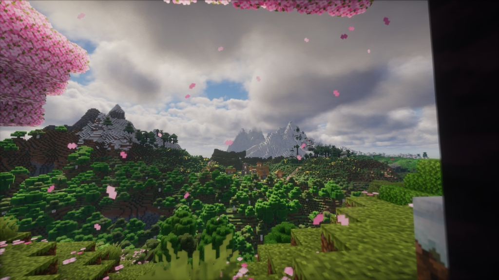
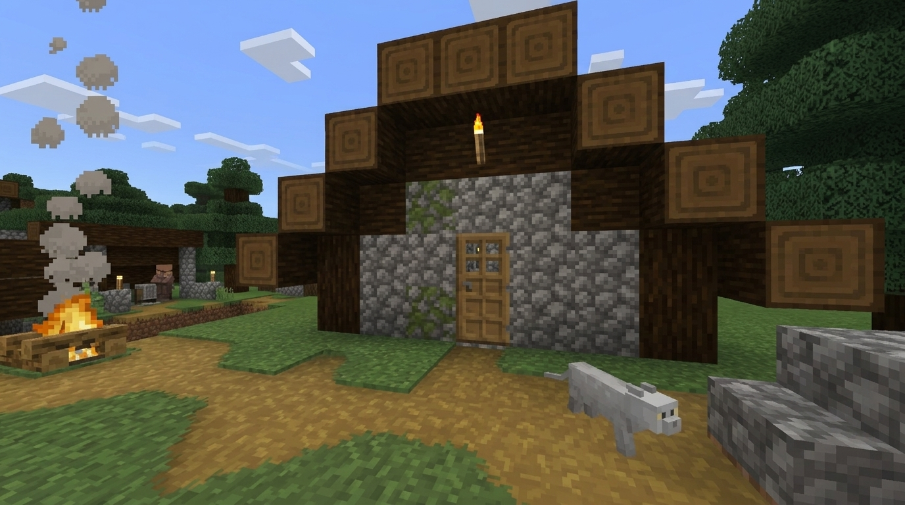
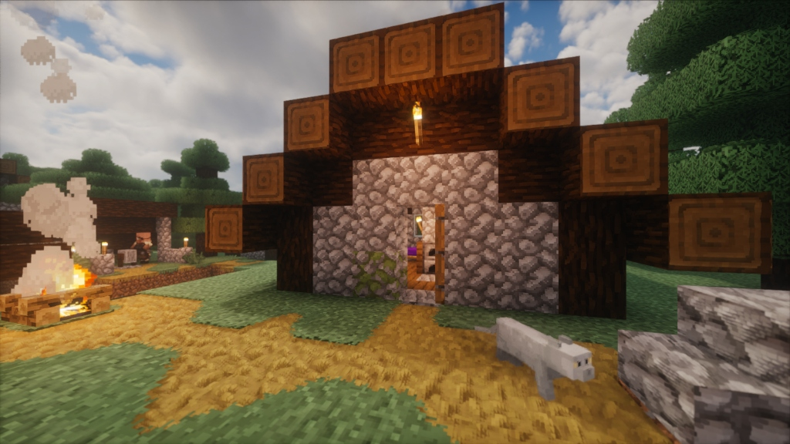

A handcrafted 32x resource pack engineered for total visual immersion: raymarched Parallax Occlusion Mapping (POM), volumetric bushy foliage, smooth CTM block edge blending, and flawless Distant Horizons infinite vistas.

Photographed directly in-game: lush cherry blossom canopies, drifting petal particles, and snowcapped mountains rendered with Distant Horizons LODs.
Slide the bar left and right to inspect the dramatic transformation from flat vanilla 16x to volumetric 3D POM and Photon Shaders.


Every screenshot below was captured in real-time with Terra32, Photon Shader (Recommended), and Distant Horizons LOD rendering.
Expansive mountain ranges rendered with Distant Horizons LODs, fluttering cherry petal particles, and 32x foliage textures.
Every block, item, font glyph, and shader pass has been calibrated to deliver a unified aesthetic without compromises.
11 species of volumetric bushy leaves with protruding fluff plates, 8-plane dense wild grass, 3D ferns, blooming water lilies, and flowers with ground leaf rosettes.
Eliminates harsh grid seams! Grass edges lap smoothly onto adjacent stone, dirt, diorite, sand, and gravel using Continuity CTM with dynamic biome tint matching.
Raymarched Parallax Occlusion Mapping (POM) gives blocks real 3D carved depth. Specular maps control roughness, metalness, and subsurface scattering on foliage.
38 custom sculpted 3D models for swords, pickaxes, axes, shovels, hoes, and bows. Dropped items lay flat on the ground naturally instead of spinning endlessly!
Ultra-sharp font sheets upscaled with 16x16 glyph cells, covering ASCII, Latin, Accented, SGA Enchanting, and Illager runes with zero kerning distortion.
Fluid textures for lava and water with calibrated frame interpolation and timing metadata. Zero shader conflicts with native Photon lava physics.
Hover over any item or block to inspect its labPBR material characteristics.
Compatible with Fabric, NeoForge, Prism Launcher, Modrinth & Vanilla.
Click the download button to get the pre-built Terra32.zip package (13.2 MB).
Place the downloaded file directly into your Minecraft instance's resource pack folder:
Or in Prism Launcher: Right click instance → Minecraft Folder → resourcepacks.
Open Minecraft, navigate to Options → Resource Packs and move Terra32 to the right column. Click Done or hit F3 + T to reload!
The recommended shader is Photon Shader by SixthSurge! Terra32’s labPBR 1.2+ specular reflections, subsurface scattering on lush foliage, and raymarched Parallax Occlusion Mapping (POM) depth are specifically tuned and calibrated for Photon. All official in-game captures on this website were photographed using Photon Shader + Distant Horizons.
Yes! Terra32 is fully tested and verified with Distant Horizons and Iris Shaders. Distant terrain, mountain ranges, and valleys seamlessly match Terra32's biomes and color palettes with zero chunk borders or color mismatches.
No! Terra32 looks gorgeous in vanilla Minecraft without shaders. You will enjoy crisp 32x textures, 3D bushy leaves, dense grass, 3D weapons, and flat dropped items. However, to see the raymarched 3D surface depth (POM) and realistic reflections, Photon Shader is strongly recommended.
Terra32 uses the OptiFine / Continuity CTM overlay format. The Continuity mod (Fabric 1.21.x) reads the 17 overlay tiles to automatically blend adjacent blocks, making grass and dirt transition naturally into stone, gravel, and sand.
No. The base cube of each leaf block retains vanilla cullface logic. This means all interior leaf faces inside tree canopies are culled by the GPU, keeping triangle counts minimal and frame rates smooth.